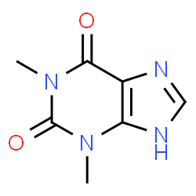

To render a pdf or word document update your header text to:
format: pdf
format: docx
In order to cross reference different sections in your Quarto document your header should include: number-sections: true
References for YAML Header
General info on YAML:
The YAML Header is marked by the three dashes “- - -”
The general principle is to have: the name of a data item (a key), followed by a colon, a space, and then the data item’s value. A key-value pair in the format key: value.
Each line in YAML is a new item.
Dashes (-) represent individual items in a list.
Note that indentations matter in YAML!!
YAML can be used to specify the global settings for your document (i.e. figure caption location, citation method, code folding, etc.).
You can use the tab key to see what options are available
Theophylline is a medication used to treat asthma and chronic obstructive pulmonary disease as a second-line drug. It is a bronchodilator. This activity reviews the indications, action, and contraindications for theophylline as a potential agent in treating asthma and chronic obstructive pulmonary disease. This activity will highlight the mechanism of action, adverse event profile, pharmacokinetics, and drug interactions pertinent for members of the interprofessional team in the treatment of patients with asthma and chronic obstructive pulmonary disease. (https://www.ncbi.nlm.nih.gov/books/NBK519024/). The chemical structure (Figure 1) is shown below:

Figure 1: Chemical Structure
1.2 Goals
Develop a PopPK model for theophylline.
1.3 Raw Data
Note
When specifying setting for your code blocks quarto uses the #| (hash pipe). Also, now you use lowercase when for true and false options. EX: #| echo: false
This is different from rmd where we use uppercase and list our options in the chunk delimiter EX: ```{r, include = T, message=FALSE, warning = FALSE, results="hide"}
As shown in Figure 2 (a) and Figure 2 (b) we have 12 IDs with PK data collected over 25 hours. The only other covariate we have is weight and that is plotted below in Figure 3.
flowchart LR
A[Depot] == Ka ==> B[Vc]
B == Ke ==>END:::hidden
classDef hidden display: none;
Figure 4: Theophylline 1 Compartmental Model
flowchart LR
A[Depot] == Ka ==> B[Vc]
B[Vc] <== Q ==> C[Vp]
B == Ke ==>END:::hidden
classDef hidden display: none;
style A fill:#FDBCB4
style B fill:#FDBCB4
style C fill:#FDBCB4
Figure 5: Theophylline 2 Compartmental Model
1.5 Results
As described in Section 1.3 there were a total of 12 participants in the current study. Initially a 1-compartment model was tested with scaling for weight. Below are the diagnostics plots (Figure 6, Figure 7, Figure 8).